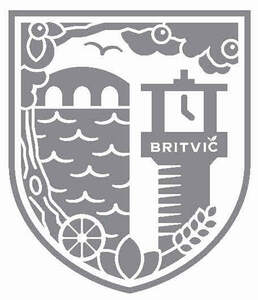

Trade Mark Journal No.2025/020 16 May 2025
UK00004196354 29 April 2025 (5,29,30,32,33,35)

- Class 5
- Pharmaceuticals, medical and veterinary preparations; sanitary preparations for medical purposes; dietetic food and substances adapted for medical or veterinary use, food for babies; dietary supplements for human beings and animals; plasters, materials for dressings; material for stopping teeth, dental wax; disinfectants; preparations for destroying vermin; fungicides, herbicides; medicinal and medicated drinks; dietetic drinks; vitamin drinks; rehydration preparations; dietary supplement drinks; dietary supplements and dietetic preparations; vitamin fortified beverages for medical purposes; medicinal preparations; medicinal beverages; sarsaparilla beverages (medicinal); beverages for infants; tisanes [medicated beverages]; preparations for making medicinal beverages; beverages adapted for medicinal purposes; herbal beverages for medicinal use; electrolyte replacement beverages for medical purposes; malted milk beverages for medical purposes; dietetic beverages adapted for medical purposes; diabetic fruit juice beverages adapted for medical purposes; diabetic fruit juice beverages adapted for medical use; dietetic beverages for babies adapted for medical purposes; natural remedies; herbal supplements; powdered nutritional supplement energy drink mix; mineral waters for medical purposes; vitamin and mineral supplements; liquid vitamin supplements; meal replacement powders; dietary supplements in powder form; powdered nutritional supplement drink mix; protein powder dietary supplements; whey protein dietary supplements; protein supplement shakes; powdered fruit-flavored dietary supplement drink mix; nutritional supplement energy bars; dietary supplements for infants; artificial sweeteners adapted for diabetics; diabetic drinks for medical purposes; probiotic supplements; prebiotic supplements; probiotic preparations for medical use.
- Class 29
- Meat, fish, poultry and game; meat extracts; preserved, frozen, dried and cooked fruits and vegetables; jellies, jams, compotes; eggs; milk, cheese, butter, yoghurt and other milk products; oils and fats for food; preserved, frozen, dried and cooked fruits; milk; milk products, excluding ice cream; milk beverages; milk beverages containing fruit; almond, oat, hazelnut, rice, cashew, peanut and coconut milk; protein milk; milkshakes; flavoured milk drinks; yoghurt; dairy alternative yoghurt drinks; non-dairy milk substitutes; plant based milk substitutes; organic milk; fruit juices for cooking; pressed fruit paste.
- Class 30
- Coffee, tea, cocoa and artificial coffee; rice, pasta and noodles; tapioca and sago; flour and preparations made from cereals; bread, pastries and confectionery; chocolate; ice cream, sorbets and other edible ices; sugar, honey, treacle; yeast, baking-powder; salt, seasonings, spices, preserved herbs; vinegar, sauces and other condiments; ice (frozen water); coffee substitutes; coffee, teas, and substitutes therefor; decaffeinated coffee; flavoured coffee; roasted coffee beans; beverages with coffee base; mixtures of coffee; powdered coffee in drip bags; coffee extracts; unroasted coffee beans; coffee flavourings; coffee capsules; instant coffee; coffee bags; tea bags; tea leaves; flavourings of tea; tea beverages with milk; tea essences; beverages with tea base; herbal infusions; herbal teas; herbal tea preparations for making beverages; sugars and natural sweeteners; powdered sugar for preparing isotonic beverages; processed grains; starches for food; ice milk; frozen yogurt.
- Class 32
- Beers; non-alcoholic beverages; mineral and aerated waters; fruit beverages and fruit juices; alcohol-free beverages or juices; malt beverages; carbonated beverages; drinking water containing vitamins; energy drinks enhanced with vitamins; sports drinks enhanced with vitamins; soft drinks; ice fruit beverages; frozen carbonated beverages; whey beverages; isotonic beverages and energy drinks; preparations for making beverages; fruit drinks; non-alcoholic fruit flavored squashes; vegetable drinks; carbonated drinks; non-alcoholic malt beverages; slush drinks being smoothies; whey beverages and sports drinks; flavoured drinking waters; fruit flavored squashes and energy drinks containing vitamins; smoothies; concentrated preparations for beverages; energy drinks; flavored drinking waters and sports drinks containing vitamins; syrups and concentrates for making fruit drinks; squashes being fruit flavored non-alcoholic iced drinks; energy drinks containing vitamins; frozen fruit based iced drinks; slush drinks, namely, frozen fruit based beverages, frozen energy drinks, frozen herbal drinks; smoothies, pastilles and powders for making effervescing non-alcoholic beverages; beverage preparations, namely, effervescing pastilles used in the preparation of fruit drinks; squashes being non-alcoholic fruit flavored iced drinks; slush drinks being frozen fruit based beverages; isotonic beverages; energy drinks and smoothies; preparations for making non-alcoholic fruit drinks; fruit-flavored iced drinks being squashes; energy drinks and sports drinks; soft drinks, namely, sodas, tonic water, ginger beer, bitter lemon, lemonade, non-alcoholic soda beverages flavoured with tea and sports drinks; non-alcoholic bitters; non-alcoholic flavored carbonated beverages; non-alcoholic cocktails; non-alcoholic fruit cocktails; non-alcoholic cocktail bases; non-alcoholic cocktail mixes.
- Class 33
- Alcoholic beverages, except beers; alcoholic preparations for making beverages; alcoholic waters; alcoholic flavoured waters; alcoholic fruit beverages (non-alcoholic); alcoholic fruit drinks and fruit juices; alcoholic fruit flavoured drinks; alcoholic fruit beverages; alcoholic fruit nectars; alcoholic energy drinks; alcoholic cordials; alcoholic squashes; alcoholic dilutable preparations for beverages; carbonated alcoholic drinks; alcoholic syrups and concentrates for beverages; alcoholic slush drinks; tablets, powders, pastilles and/or other preparations for making effervescent alcoholic drinks; alcoholic sodas; alcoholic sherbets (beverages); alcoholic beverages flavoured with tea; alcoholic beverages flavoured with coffee; alcoholic apéritifs; alcoholic cocktails; prepared alcoholic cocktails; prepared wine cocktails; alcoholic cocktail bases; alcoholic cocktail mixes; alcoholic spirits; alcoholic wines; alcoholic grape juice beverages; alcoholic ciders; low-alcoholic beverages; low-alcoholic drinks; low-alcoholic apéritifs; low-alcoholic beers; low-alcoholic cocktails; low-alcoholic cocktail bases; low-alcoholic cocktail mixes; low-alcoholic spirits; low-alcoholic wines; low-alcoholic ciders; wine-based beverages; grain-based distilled alcoholic beverages; pre-mixed alcoholic beverages; aperitifs with a distilled alcoholic liquor base; alcoholic coffee-based beverage; alcoholic tea-based beverage; flavoured brewed alcoholic malt beverages, except beers.
- Class 35
- Advertising; business management; business administration; office functions; marketing, advertising, and promotional services; advertising services for the promotion of beverages; promoting the sale of goods and services of others through promotional events; market campaigns; preparation of advertising campaigns; development of promotional campaigns; sales promotion; promotional services; product marketing; production of sound and video recordings for marketing purposes; marketing through product placement for others in virtual environments; management of customer loyalty, incentive or promotional schemes; administration of loyalty rewards programs; administration of loyalty programs involving discounts or incentives; retail and online retail services connected with the sale of pharmaceuticals, medical and veterinary preparations, sanitary preparations for medical purposes, dietetic food and substances adapted for medical or veterinary use; retail and online retail services connected with the sale of food for babies, dietary supplements for human beings and animals, plasters, materials for dressings, material for stopping teeth, dental wax, disinfectants, preparations for destroying vermin, fungicides, herbicides; retail and online retail services connected with the sale of medicinal and medicated drinks, dietetic drinks, vitamin drinks, rehydration preparations, dietary supplement drinks, dietary supplements and dietetic preparations, vitamin fortified beverages for medical purposes, medicinal preparations, medicinal beverages, sarsaparilla beverages (medicinal), beverages for infants, tisanes [medicated beverages]; retail and online retail services connected with the sale of preparations for making medicinal beverages, beverages adapted for medicinal purposes, herbal beverages for medicinal use, electrolyte replacement beverages for medical purposes, malted milk beverages for medical purposes, dietetic beverages adapted for medical purposes, diabetic fruit juice beverages adapted for medical purposes; retail and online retail services connected with the sale of diabetic fruit juice beverages adapted for medical use, dietetic beverages for babies adapted for medical purposes, natural remedies, herbal supplements, powdered nutritional supplement energy drink mix, mineral waters for medical purposes, vitamin and mineral supplements, liquid vitamin supplements, meal replacement powders, dietary supplements in powder form, powdered nutritional supplement drink mix, protein powder dietary supplements; retail and online retail services connected with the sale of whey protein dietary supplements, protein supplement shakes, powdered fruit-flavored dietary supplement drink mix, nutritional supplement energy bars, dietary supplements for infants, artificial sweeteners adapted for diabetics, diabetic drinks for medical purposes, probiotic supplements, prebiotic supplements, probiotic preparations for medical use; retail and online retail services connected with the sale of meat, fish, poultry and game, meat extracts, preserved, frozen, dried and cooked fruits and vegetables, jellies, jams, compotes, eggs, milk, cheese, butter, yoghurt and other milk products, oils and fats for food, preserved, frozen, dried and cooked fruits, milk, milk products, excluding ice cream, milk beverages, milk beverages containing fruit; retail and online retail services connected with the sale of almond, oat, hazelnut, rice, cashew, peanut and coconut milk, protein milk, milkshakes, flavoured milk drinks, yoghurt, dairy alternative yoghurt drinks, non-dairy milk substitutes, plant based milk substitutes, organic milk, fruit juices for cooking, pressed fruit paste; retail and online retail services connected with the sale of coffee, tea, cocoa and artificial coffee, rice, pasta and noodles, tapioca and sago, flour and preparations made from cereals, bread, pastries and confectionery, chocolate, ice cream, sorbets and other edible ices; retail and online retail services connected with the sale of sugar, honey, treacle, yeast, baking-powder, salt, seasonings, spices, preserved herbs, vinegar, sauces and other condiments, ice (frozen water); retail and online retail services connected with the sale of coffee substitutes, coffee, teas, and substitutes therefor, decaffeinated coffee, flavoured coffee, roasted coffee beans, beverages with coffee base, coffee substitutes, mixtures of coffee, powdered coffee in drip bags, coffee extracts, unroasted coffee beans, coffee flavourings, coffee capsules, instant coffee, coffee bags; retail and online retail services connected with the sale of tea bags, tea leaves, flavourings of tea, tea beverages with milk, tea essences, beverages with tea base, herbal infusions, herbal teas, herbal tea preparations for making beverages, sugars and natural sweeteners, powdered sugar for preparing isotonic beverages; retail and online retail services connected with the sale of processed grains, starches for food, ice milk, frozen yogurt, beers, non-alcoholic beverages, mineral and aerated waters, fruit beverages and fruit juices, alcohol-free beverages or juices, malt beverages, carbonated beverages, drinking water containing vitamins, energy drinks enhanced with vitamins, sports drinks enhanced with vitamins; retail and online retail services connected with the sale of soft drinks, ice fruit beverages, frozen carbonated beverages, whey beverages, isotonic beverages and energy drinks, preparations for making beverages, fruit drinks, non-alcoholic fruit flavored squashes, vegetable drinks, herbal drinks; retail and online retail services connected with the sale of carbonated drinks, non-alcoholic malt beverages, slush drinks being smoothies, whey beverages and sports drinks, flavoured drinking waters, fruit flavored squashes and energy drinks containing vitamins, smoothies, concentrated preparations for beverages; retail and online retail services connected with the sale of energy drinks, flavored drinking waters and sports drinks containing vitamins, syrups and concentrates for making fruit drinks, squashes being fruit flavored non-alcoholic iced drinks, energy drinks containing vitamins, frozen fruit based iced drinks, slush drinks, namely, frozen fruit based beverages, frozen energy drinks, frozen herbal drinks; retail and online retail services connected with the sale of smoothies, pastilles and powders for making effervescing non-alcoholic beverages, beverage preparations, namely, effervescing pastilles used in the preparation of fruit drinks, squashes being non-alcoholic fruit flavored iced drinks; retail and online retail services connected with the sale of slush drinks being frozen fruit based beverages, isotonic beverages, energy drinks and smoothies, preparations for making non-alcoholic fruit drinks, fruit-flavored iced drinks being squashes, energy drinks and sports drinks; retail and online retail services connected with the sale of soft drinks, namely, sodas, tonic water, ginger beer, bitter lemon, lemonade, non-alcoholic soda beverages flavoured with tea and sports drinks, non-alcoholic bitters, non-alcoholic flavored carbonated beverages, non-alcoholic cocktails, non-alcoholic fruit cocktails, non-alcoholic cocktail bases, non-alcoholic cocktail mixes, cocktails, alcoholic cocktails, prepared alcoholic cocktails, prepared wine cocktails, alcoholic cocktail bases, alcoholic cocktail mixes, pre-mixed alcoholic beverages, other than beer based; information, advisory and consultancy services relating to the aforesaid services.
Britvic Soft Drinks Limited
Representative: Stobbs